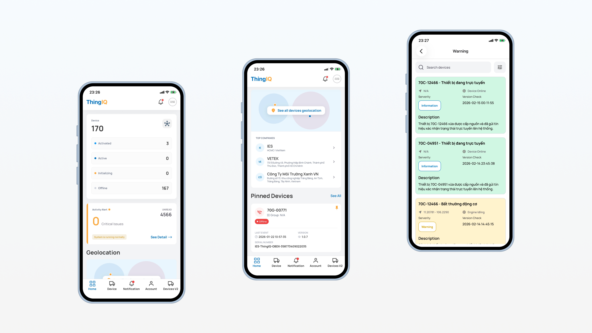
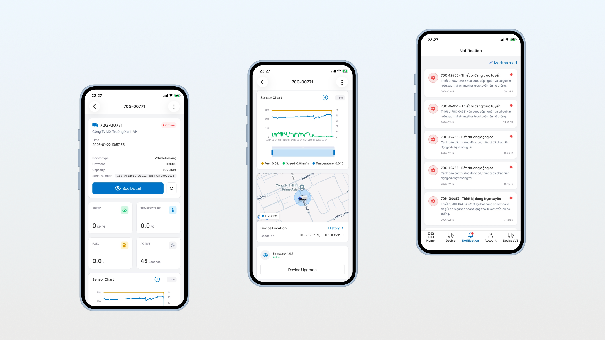
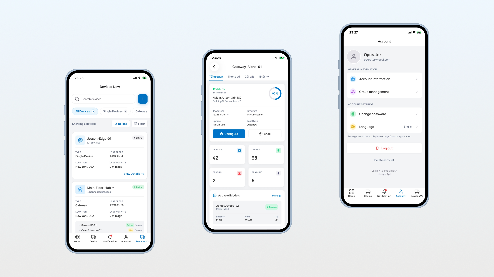

Key Objectives
- check_circle Operational Transparency: Provide real-time visibility into device health, environmental conditions, and fuel consumption.
- check_circle Remote Maintenance: Reduce field service costs by enabling remote firmware updates (FOTA) and device reboots.
- check_circle Security & Compliance: Ensure secure data transmission and role-based access control for industrial environments.
- check_circle Scalable Management: Streamline the onboarding and grouping of thousands of devices across multiple organizations.
Target Users
- build Maintenance Engineers: Monitor real-time telemetry (speed, temperature, fuel) and perform remote troubleshooting.
- admin_panel_settings Organization Administrators: Manage user permissions, company-wide settings, and large-scale device configurations.
- manage_accounts Operational Managers: Analyze historical data trends via interactive charts to optimize resource allocation and prevent downtime.
Core Features
Operation Features
-
speedLive Telemetry Dashboard: Real-time monitoring of velocity, temp, and fuel with high-performance charts.
-
toggle_onDevice Control Center: Remote configuration, reboots, and status tracking (Active, Warning, Critical).
-
notifications_activeIntelligent Alerting: Push notifications for abnormal activities like engine idling or threshold breaches.
-
mapClustered Map Integration: Geographic visualization using Google Maps with smart clustering.
Admin / Config Features
-
policyOrganization & Role Management: Granular RBAC (Role-Based Access Control) for users.
-
upload_fileBulk Provisioning: Feature-rich CSV import for rapid device onboarding into the system.
-
system_update_altFirmware Over-the-Air (FOTA): Managed firmware deployments to run secure software.
-
tuneFuel Calibration: Advanced settings for voltage thresholds, tank capacities, and consumption limits.
System Architecture
ThingIQ follows a Feature-based MVVM architecture, ensuring high maintainability and clear separation of concerns.
Leverages Expo Router for deep-linking and hierarchical navigation.
A custom internal library providing atomic UI components and centrally managed design tokens for consistent UI across all platforms.
Specialized services for remote API communication and hardware signaling.
Security & Perfomance
- verified_user Secure Authentication: Multi-factor authentication support with OTP and Firebase-backed identity management.
- lock Data Integrity: HTTPS/TLS 1.3 encryption for all API traffic and secure storage for sensitive credentials via MMKV.
Optimization Techniques
- FlashList Integration: Smooth scrolling for device lists with 10k+ entries.
- Optimistic UI: Instant feedback on device configuration changes.
- Clustered Maps: Reduced GPU load when rendering thousands of geographic markers.
Application Interface
Custom design system built on Shopify Restyle, focusing on industrial reliability and high information density.
Responsive Login & Auth

Monitoring Dashboard

Clustered Map Integration

Achievements
- check Enterprise Stability: Successfully managing fleet versions across diverse Android and iOS hardware profiles.
- check High Availability: Reliable real-time alerting system with <1s notification delivery latency.
- check Multi-tenancy: Robust support for multi-company hierarchical structures within a single application instance.
Future Roadmap
- arrow_right Onboarding Enhancements: Native step-by-step device provisioning wizard.
- arrow_right Enhanced Analytics: Predictive maintenance reports based on historical sensor data.
- arrow_right Offline Synchronization: Enhanced local caching for field operations in low-connectivity areas.